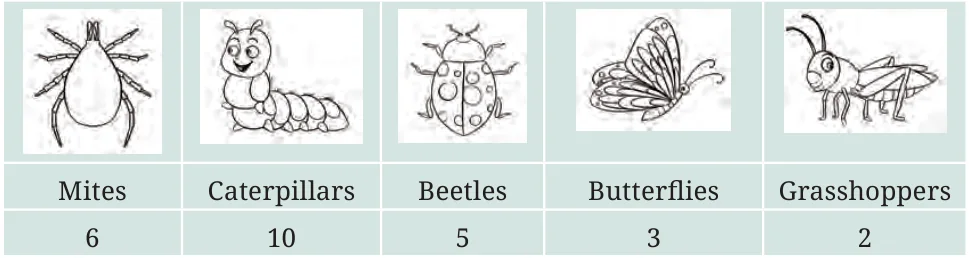
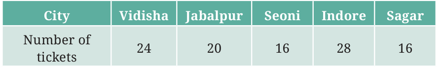
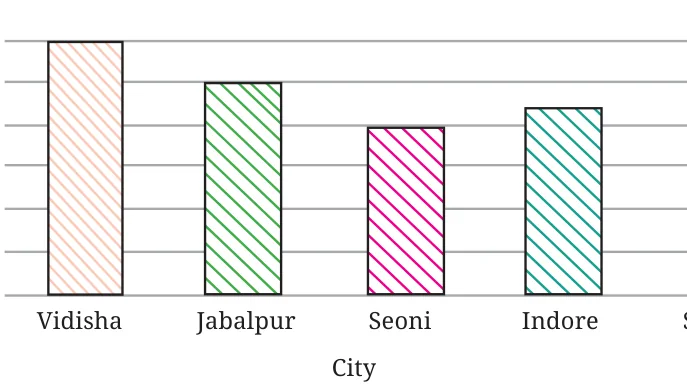
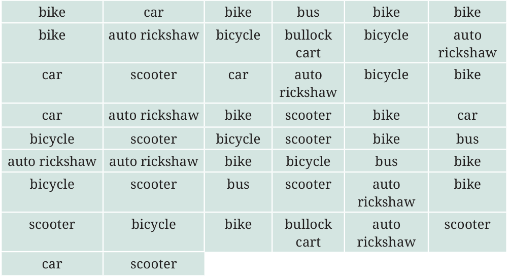
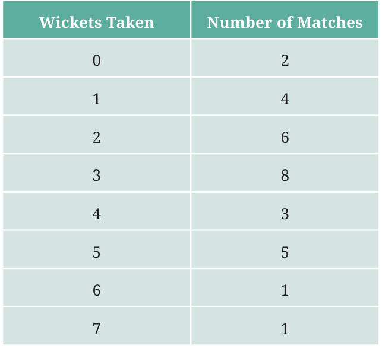
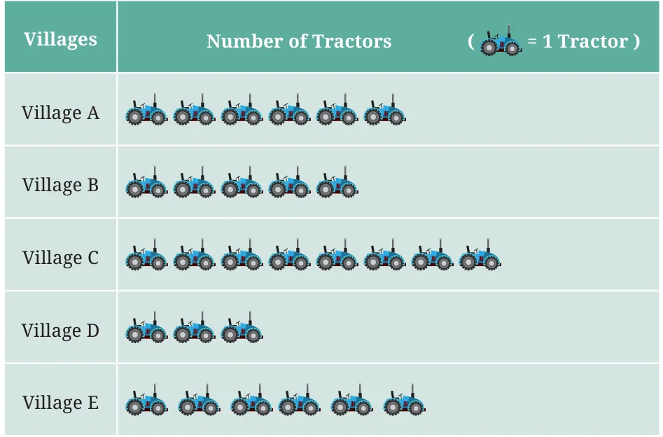
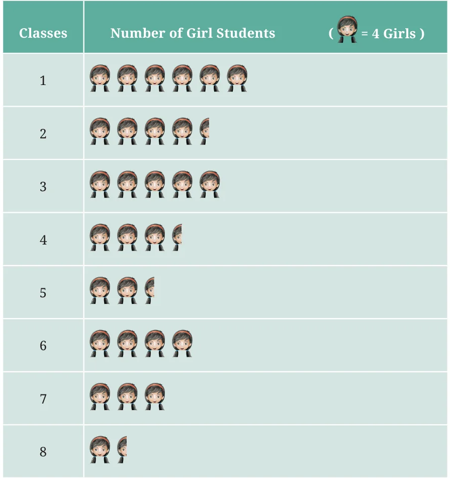
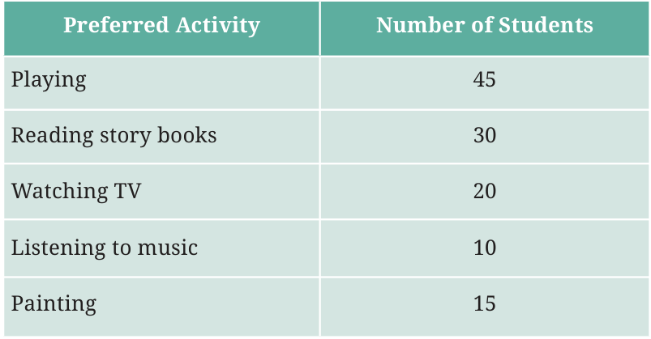
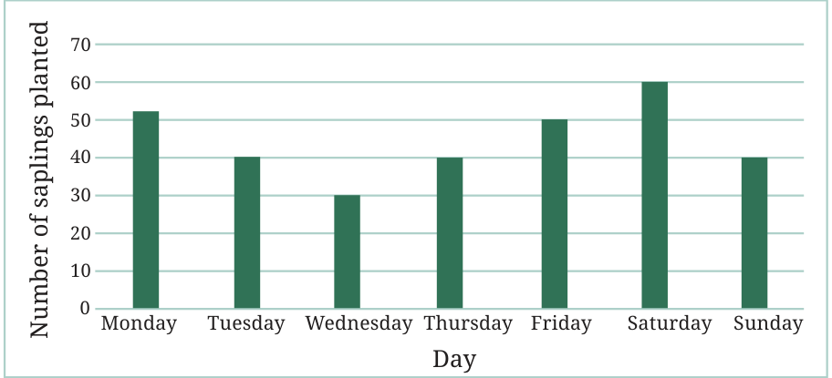
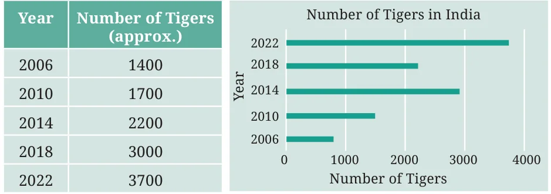

<!DOCTYPE html>
<html lang="en">
<head>
<meta charset="UTF-8">
<meta name="viewport" content="width=device-width,initial-scale=1">
<title>Figure it Out — Data Handling and Presentation</title>
<meta name="description" content="Class 6 Mathematics · Data Handling and Presentation · Figure it Out">
<link rel="icon" href="data:image/svg+xml,<svg xmlns='http://www.w3.org/2000/svg' viewBox='0 0 100 100'><text y='.9em' font-size='90'>📘</text></svg>">
<link rel="stylesheet" href="../../../assets/book.css">
<link rel="stylesheet" href="https://cdn.jsdelivr.net/npm/katex@0.16.11/dist/katex.min.css" crossorigin="anonymous">
</head>
<body>
<header class="topbar">
<div class="topbar-in">
  <div class="crumb">
    <span class="c1"><a href="../../../index.html">Library</a> · <a href="../../index.html">Class 6 Mathematics</a></span>
    <span class="c2">Data Handling and Presentation · Figure it Out</span>
  </div>
  <a class="tb-btn" data-nav="prev" href="../../04-data-handling-and-presentation/10-drawing-a-bar-graph-4.4/index.html" title="4.4 Drawing a Bar Graph">←</a>
  <details class="drawer"><summary class="tb-btn" title="Sections in this chapter">☰</summary>
<div class="drawer-panel"><div class="dh">Data Handling and Presentation</div><a href="../01-chapter-opener/index.html">Chapter opener; 4.1 Collecting and Organising Data</a><a href="../02-figure-it-out/index.html">Figure it Out</a><a href="../03-figure-it-out/index.html">Figure it Out</a><a href="../04-figure-it-out/index.html">Figure it Out</a><a href="../05-pictographs-4.2/index.html">4.2 Pictographs</a><a href="../06-drawing-a-pictograph/index.html">Drawing a Pictograph</a><a href="../07-figure-it-out/index.html">Figure it Out</a><a href="../08-bar-graphs-4.3/index.html">4.3 Bar Graphs</a><a href="../09-figure-it-out/index.html">Figure it Out</a><a href="../10-drawing-a-bar-graph-4.4/index.html">4.4 Drawing a Bar Graph</a><a href="../11-figure-it-out/index.html" aria-current="page">Figure it Out</a><a href="../12-artistic-and-aesthetic-considerations-4.5/index.html">4.5 Artistic and Aesthetic Considerations</a><a href="../13-figure-it-out/index.html">Figure it Out</a><a href="../14-infographics/index.html">Infographics</a><a href="../15-summary/index.html">Summary</a><a href="../16-solutions/index.html">CHAPTER 4 — SOLUTIONS</a></div></details>
  <a class="tb-btn" data-nav="next" href="../../04-data-handling-and-presentation/12-artistic-and-aesthetic-considerations-4.5/index.html" title="4.5 Artistic and Aesthetic Considerations">→</a>
  <button class="tb-btn" data-theme-toggle title="Toggle light / dark" aria-label="Toggle light or dark theme">◐</button>
</div>
<div class="progress"><span style="width:37.6%"></span></div>
</header>
<main class="wrap">
<div class="sec-head">
  <p class="eyebrow"><a href="../index.html">Chapter 4 · Data Handling and Presentation</a></p>
  <h1>Figure it Out</h1>
  <p class="sec-meta">Textbook pages 20–28 · 11 figures</p>
</div>
<article class="prose">
<ul class="qlist">
<li><span class="mk">1.</span><span class="lt">Samantha visited a tea garden, and collected data of the insects</span></li>
</ul>
<p>and critters she saw there. Here is the data she collected:</p>
<figure class="fig table-fig wide"></figure>
<p>Help her prepare a bar graph representing this data.</p>
<ul class="qlist">
<li><span class="mk">2.</span><span class="lt">Pooja collected data on the number of tickets sold at the Bhopal</span></li>
</ul>
<p>railway station for a few different cities of Madhya Pradesh over a two-hour period.</p>
<figure class="fig table-fig wide"></figure>
<p>She used this data and prepared a bar graph on the board to discuss the data with her students, but someone erased a portion of the graph.</p>
<figure class="fig"></figure>
<aside class="sidenote"><p>Sagar</p></aside>
<ul class="qlist">
<li><span class="mk">a.</span><span class="lt">Write the number of tickets sold for Vidisha above the bar.</span></li>
<li><span class="mk">b.</span><span class="lt">Write the number of tickets sold for Jabalpur above the bar.</span></li>
<li><span class="mk">c.</span><span class="lt">The bar for Vidisha is 6 unit lengths and the bar for Jabalpur</span></li>
</ul>
<p>is 5 unit lengths. What is the scale for this graph?</p>
<ul class="qlist">
<li><span class="mk">d.</span><span class="lt">Draw the correct bar for Sagar.</span></li>
<li><span class="mk">e.</span><span class="lt">Add the scale of the bar graph by placing the correct numbers</span></li>
</ul>
<p>on the vertical axis.</p>
<ul class="qlist">
<li><span class="mk">f.</span><span class="lt">Are the bars for Seoni and Indore correct in this graph? If</span></li>
</ul>
<p>not, draw the correct bar(s).</p>
<ul class="qlist">
<li><span class="mk">3.</span><span class="lt">Chinu listed the various means of transport that passed across</span></li>
</ul>
<p>the road in front of his house from 9 a.m. to 10 a.m.:</p>
<figure class="fig table-fig wide"></figure>
<ul class="qlist">
<li><span class="mk">a.</span><span class="lt">Prepare a frequency distribution table for the data.</span></li>
<li><span class="mk">b.</span><span class="lt">Which means of transport was used the most?</span></li>
<li><span class="mk">c.</span><span class="lt">If you were there to collect this data, how could you do it?</span></li>
</ul>
<p>Write the steps or process.</p>
<ul class="qlist">
<li><span class="mk">4.</span><span class="lt">Roll a die 30 times and record the number you obtain each time.</span></li>
</ul>
<p>Prepare a frequency distribution table using tally marks. Find the number that appeared:</p>
<ul class="qlist">
<li><span class="mk">a.</span><span class="lt">The minimum number of times.</span></li>
<li><span class="mk">b.</span><span class="lt">The maximum number of times.</span></li>
<li><span class="mk">c.</span><span class="lt">Find numbers that appeared an equal number of times.</span></li>
<li><span class="mk">5.</span><span class="lt">Faiz prepared a frequency distribution table of data on the number</span></li>
</ul>
<p>of wickets taken by Jaspreet Bumrah in his last 30 matches:</p>
<figure class="fig table-fig"></figure>
<ul class="qlist">
<li><span class="mk">a.</span><span class="lt">What information is this table giving?</span></li>
<li><span class="mk">b.</span><span class="lt">What may be the title of this table?</span></li>
<li><span class="mk">c.</span><span class="lt">What caught your attention in this table?</span></li>
<li><span class="mk">d.</span><span class="lt">In how many matches has Bumrah taken 4 wickets?</span></li>
<li><span class="mk">e.</span><span class="lt">Mayank says, “If we want to know the total number of</span></li>
</ul>
<p>wickets he has taken in his last 30 matches, we have to add the numbers 0, 1, 2, 3 …, up to 7.” Can Mayank get the total number of wickets taken in this way? Why?</p>
<ul class="qlist">
<li><span class="mk">f.</span><span class="lt">How would you correctly figure out the total number of</span></li>
</ul>
<p>wickets taken by Bumrah in his last 30 matches, using this table?</p>
<ul class="qlist">
<li><span class="mk">6.</span><span class="lt">The following pictograph shows the number of tractors in five</span></li>
</ul>
<p>different villages.</p>
<figure class="fig table-fig wide"></figure>
<p>Observe the pictograph and answer the following questions -</p>
<ul class="qlist">
<li><span class="mk">a.</span><span class="lt">Which village has the smallest number of tractors?</span></li>
<li><span class="mk">b.</span><span class="lt">Which village has the most tractors?</span></li>
<li><span class="mk">c.</span><span class="lt">How many more tractors does Village C have than Village B?</span></li>
<li><span class="mk">d.</span><span class="lt">Komal says, “Village D has half the number of tractors as</span></li>
</ul>
<p>Village E.” Is she right?</p>
<ul class="qlist">
<li><span class="mk">7.</span><span class="lt">The number of girl students in each class of a school is depicted</span></li>
</ul>
<p>by the pictograph:</p>
<figure class="fig table-fig wide"></figure>
<p>Observe this pictograph and answer the following questions:</p>
<ul class="qlist">
<li><span class="mk">a.</span><span class="lt">Which class has the least number of girl students?</span></li>
<li><span class="mk">b.</span><span class="lt">What is the difference between the number of girls in Classes</span></li>
</ul>
<p>5 and 6?</p>
<ul class="qlist">
<li><span class="mk">c.</span><span class="lt">If two more girls were admitted in Class 2, how would the</span></li>
</ul>
<p>graph change?</p>
<ul class="qlist">
<li><span class="mk">d.</span><span class="lt">How many girls are there in Class 7?</span></li>
<li><span class="mk">8.</span><span class="lt">Mudhol Hounds (a type of breed of Indian dogs) are largely found</span></li>
</ul>
<p>in North Karnataka’s Bagalkote and Vijaypura districts. The government took an initiative to protect this breed by providing support to those who adopted these dogs. Due to this initiative, the number of these dogs increased. The number of Mudhol dogs in six villages of Karnataka are as follows - Village A : 18, Village B : 36, Village C : 12, Village D : 48, Village E : 18, Village F : 24 Prepare a pictograph and answer the following questions:</p>
<ul class="qlist">
<li><span class="mk">a.</span><span class="lt">What will be a useful scale or key to draw this pictograph?</span></li>
<li><span class="mk">b.</span><span class="lt">How many symbols will you use to represent the dogs in</span></li>
</ul>
<p>Village B?</p>
<ul class="qlist">
<li><span class="mk">c.</span><span class="lt">Kamini said that the number of these dogs in Village B and</span></li>
</ul>
<p>Village D together will be more than the number of these dogs in the other 4 villages. Is she right? Give reasons for your response.</p>
<ul class="qlist">
<li><span class="mk">9.</span><span class="lt">A survey of 120 school students was conducted to find out which</span></li>
</ul>
<p>activity they preferred to do in their free time:</p>
<figure class="fig table-fig wide"></figure>
<p>Draw a bar graph to illustrate the above data taking the scale of  1 unit length \(= 5\) students. Which activity is preferred by most students other than playing?</p>
<ul class="qlist">
<li><span class="mk">10.</span><span class="lt">Students and teachers of a primary school decided to plant tree</span></li>
</ul>
<p>saplings in the school campus and in the surrounding village during the first week of July. Details of the saplings they planted are as follows -</p>
<figure class="fig wide"></figure>
<ul class="qlist">
<li><span class="mk">a.</span><span class="lt">The total number of saplings planted on Wednesday and</span></li>
</ul>
<p>Thursday is ___________.</p>
<ul class="qlist">
<li><span class="mk">b.</span><span class="lt">The total number of saplings planted during the whole week</span></li>
</ul>
<p>is ___________.</p>
<ul class="qlist">
<li><span class="mk">c.</span><span class="lt">The greatest number of saplings were planted on ___________</span></li>
</ul>
<p>and the least number of saplings were planted on ___________. Why do you think that is the case? Why were more saplings planted on certain days of the week and less on others? Can you think of possible explanations or reasons? How could you try and figure out whether your explanations are correct?</p>
<ul class="qlist">
<li><span class="mk">11.</span><span class="lt">The number of tigers in India went down drastically between 1900</span></li>
</ul>
<p>and 1970. Project Tiger was launched in 1973 to track and protect the tigers in India. Starting in 2006, the exact number of tigers in India was tracked. Shagufta and Divya looked up information about the number of tigers in India between 2006 and 2022 in four- year intervals. They prepared a frequency table for this data and a bar graph to present this data, but there are a few mistakes in the graph. Can you find those mistakes and fix them?</p>
<figure class="fig table-fig wide"></figure>
<ul class="qlist">
<li><span class="mk">•</span><span class="lt">Like pictographs, bar graphs give a nice visual way to represent</span></li>
</ul>
<p>data. They represent data through equally-spaced bars, each of equal width, where the lengths or heights give frequencies of the different categories.</p>
<ul class="qlist">
<li><span class="mk">•</span><span class="lt">Each category is represented by a bar where the length or height</span></li>
</ul>
<p>depicts the corresponding frequency (for example, cost) or quantity (for example, runs).</p>
<ul class="qlist">
<li><span class="mk">•</span><span class="lt">The bars have uniform spaces between them to indicate that they</span></li>
</ul>
<p>are free standing and represent equal categories.</p>
<ul class="qlist">
<li><span class="mk">•</span><span class="lt">The bars help in interpreting data much faster than a frequency</span></li>
</ul>
<p>table. By reading a bar graph, we can compare frequencies of different categories at a glance.</p>
<ul class="qlist">
<li><span class="mk">•</span><span class="lt">We must decide the scale (for example, 1 unit length \(= 1\) student</span></li>
</ul>
<p>or 1 unit length = ` 200) for a bar graph on the basis of the data including the minimum and maximum frequencies, so that the resulting bar graph fits nicely and looks visually appealing on the paper or poster we are preparing. The markings of the unit lengths as per the scale must start from zero.</p>
<h3 id="s-teacher-s-note">Teacher’s Note</h3>
<p>The main focus of this chapter is to learn how to handle data to find answers to specific questions or inquiries, to test hypotheses or to take specific decisions. This should be kept in mind when providing practice opportunities to collect, organise and analyse data.</p>
</article>
<nav class="pager"><a class="" data-nav="prev" href="../../04-data-handling-and-presentation/10-drawing-a-bar-graph-4.4/index.html"><span class="dir">← Previous</span><span class="t">4.4 Drawing a Bar Graph</span><span class="ch">Data Handling and Presentation</span></a><a class="nx" data-nav="next" href="../../04-data-handling-and-presentation/12-artistic-and-aesthetic-considerations-4.5/index.html"><span class="dir">Next →</span><span class="t">4.5 Artistic and Aesthetic Considerations</span><span class="ch">Data Handling and Presentation</span></a></nav>
</main><footer class="site">Generated from the source textbook PDFs · text, figures and exercises belong to their respective publishers.</footer><script defer src="https://cdn.jsdelivr.net/npm/katex@0.16.11/dist/katex.min.js" crossorigin="anonymous"></script>
<script defer src="https://cdn.jsdelivr.net/npm/katex@0.16.11/dist/contrib/auto-render.min.js" crossorigin="anonymous"
  onload="renderMathInElement(document.body,{delimiters:[
    {left:'\\(',right:'\\)',display:false},
    {left:'$$',right:'$$',display:true},
    {left:'\\[',right:'\\]',display:true}],throwOnError:false,ignoredTags:['script','noscript','style','textarea','pre','code']})"></script>
<script src="../../../assets/book.js"></script>
<script defer src="../../../../assets/search.js?v=1789782769"></script>
<script defer src="../../../../assets/screenshot.js?v=1789782769"></script>
</body>
</html>
